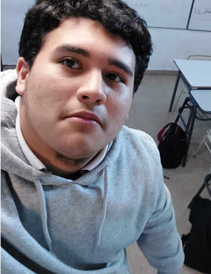
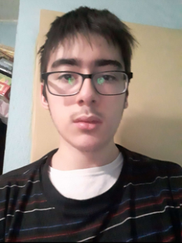
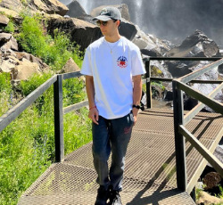
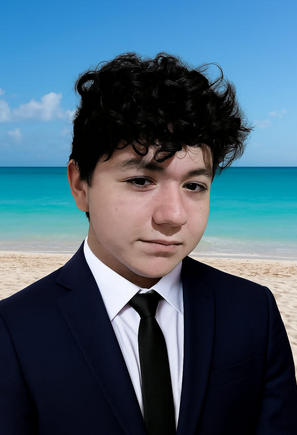
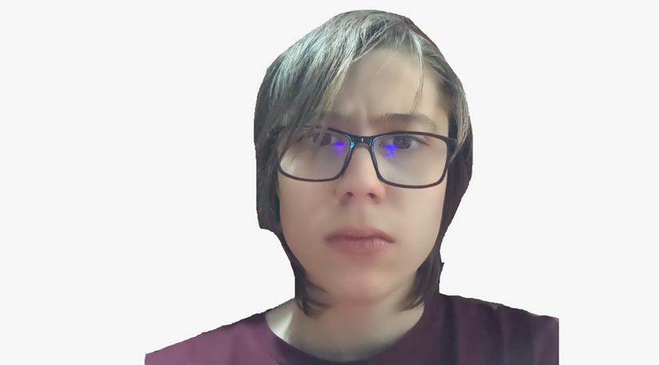
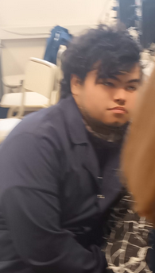

Redes
En esta sección se añadiran los vinculos a las redes sociales de la empresa
Instagram
Número de telefono
Esta sección incluye el número de telefono de la empresa con la finalidad de que sea contactada en caso de inconvenientes durante el uso de alguno de sus productos
+34661111222Número de atención al cliente, llamar en caso de inconvenientes con alguno de los productos de la empresa
Información
Esta sección incluye información de la empresa, incluyendo datos relevantes de la empresa y el creador
Acerca de la empresa
Somos JE20, una compañía creada con la finalidad de emular diversos videojuegos que se podrían considerar como retro. Nos encargamos de compartir dichos videojuegos sin una finalidad de lucro.
Creación
JE20 fue creada en el año 2024 por los integrantes: Ceferino Fares Villar, Poggi Juan Fausto, Sebastian Malpu y Robert Weisser con la finalidad de distribuir juegos que de otra forma serían muy complicados de acceder. Empezamos compartiendo diversos videojuegos mediante el uso de Instagram hasta llegar al punto actual, aunque somos una página pequeña estamos en crecimiento constante.
Acerca de los integrantes
Como equipo de JE20 estamos encargados de recopilar la mayor cántidad de videojuegos antiguos posibles con la finalidad de ser la mayor colección de juegos emulables. Llevamos trabajando en este proyecto hace tiempo.
Marco Abello
Marco Abello es el encargado de agregar la historia de cada uno de los videojuegos listados en la página de emulación.
- Año de nacimiento: 2008
- Més y día: 4 de Febrero
- Gustos: Mantenerse Warhammer 40.000 y los sapos
- Disgustos: El mondongo
Ceferino Villar
Ceferino Villar es el encargado de diseñar esta página, que cumple la función de añadir medios para contactar con los dueños de la página, además de añadir información acerca de los integrantes de JE20.
- Año de nacimiento: 2008
- Més y día: 19 de Mayo
- Gustos: Videojuegos y mirar a la pared
- Disgustos: Los cuadrados con bordes redondeados
Thiago Rodríguez
Thiago Rodríguez hace entrenamiento diario para mantenerse saludable, el se encarga del apartado de la historia de los videojuegos.
- Año de nacimiento: 2007
- Més y día: 18 de Julio
- Gustos: Mantenerse saludable y viajar
- Disgustos: Comida chatarra
Robert Weisser
Robert Weisser se encarga de la recolección de diversos archivos multimedia con la finalidad de añadirlos en el apartado Multimedia de JE20.
- Año de nacimiento: 2007
- Més y día: 8 de Mayo
- Gustos: Leer manga y comer cosas con azucar
- Disgustos: Que no le compren los alfajores
Fausto Poggi
Fausto Poggi es el miembro cuyo deber es el de listar los diversos juegos emulables junto a sus respectivos emuladores.
- Año de nacimiento: 2008
- Més y día: 24 de Enero
- Gustos: Jugar a la calculadora y videojuegos retro
- Disgustos: Los circulos
Sebastian Malpu
Sebastian Malpu es el encargado de crear la página principal, la cual servira como principal vinculo al resto de páginas.
- Año de nacimiento: El integrante ha pedido que se omita este apartado
- Més y día: El integrante ha pedido que se omita este apartado
- Gustos: Roblox y escuchar musica
- Disgustos: Que no respeten su espacio personal